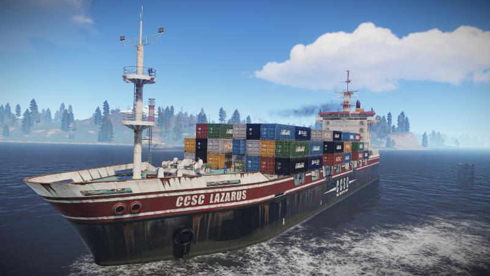

У сурвайві Rust з'явився вантажний корабель з лутом

Розробники сурвайву Rust випустили новий великий апдейт, який привернув увагу тим, що додає в гру цілий вантажний корабель, що борознить морські простори Судно CCSC «Лазар» буде з'являтися кожні 2-4 ігрові дні в якості періодичного серверного івенту, наближаючись до берега на 200 метрів. Ви зможете підпливти до нього на власному човні і забратись на борт в пошуках дорогоцінного луту.Зрозуміло, не все так просто. Вам потрібно буде усунути захисників судна, зламати два закритих ящика і обороняти корабель доти, поки вони не розкриються. Само собою, інші гравці зможуть вам перешкодити.